RMF Systems Engineering Handbook
1st July 2022
What is the RMF@TRL project about?
In the course of building the RMF, the team observed many questions being asked (by Government agencies, end users, AMR vendors and developers), about RMF's
- Safety & reliability
- Operational concerns
- Policy and regulations.
To address these concerns, Singapore's S&TPPO and SNDGG have put together a pilot project centered on National Library Board's premises at Tampines Regional
The project team (in collaboration with OSRF Singapore) will be taking a test centric approach in our development & deployment of RMF at TRL, to collect real world data to evaluate these issues.
Motivations for RMF Systems Engineering Handbook
At higher levels of consideration (from a systems engineering standpoint), we note the following trends for ROS usage:
- ROS1 has been massively successful as an open source effort amongst the academic community
- Promoting reuse of robotics developments across students, researchers and developers
- High rates of adoption across robotics community, particularly in promoting the ROS standard message libraries for interoperability
- ROS2 has been steadily gaining traction with automotive components suppliers ie: Apex.AI
- Noted ROS1 has reached end of life (noetic)
- ROS2 is supposed to champion both open source efforts and commercially ready packages (ie: ROS2 RMWs)
Key outcome we want to arrive at, is a operational (safe, functional and reliable) RMF system. Thus to bridge the divide from ROS1/ROS2 towards an operational outcome, is not just "software" issues.
There are orthogonal considerations, (ie: systems engineering concerns), that need to be addressed:
- Risk assessments and hazards analysis
- Quality assurance & quality control issues (ie: Patform hardware and software, operational safety)
- Platform safety and operational standards
- Design documentations and traceability
- Qualifications plans and system test/comissioning plans
We note also, that where previously AMRs were installed and comissioned "end to end" by a single Robotics Systems Integrator, RMF is designed to decouple the "end to end" responsibility, into the following roles:
- Building management systems
- Core logic (govening traffic control)
- AMR fleets ( > 1 brand)
This allows for multi-fleet interoperability
"The camel, was a horse, but designed by a committee..."
- Sir Alec Issigonis, designer of the Morris Mini, 1959
So it turns out, these are rather contentious issues, where answers are needed. After several months of study, the project team has outlined an approach that we think strikes the best balance of the following factors:
- Cost
- Complexity
- Performance
- Interoperability
Insert diagram of "Platform -> Qualifications -> Operations" here
For this to work however, we will be sharing both our approach (in this guide book) and the data that we have collected, for peer review process. Thus we need the
Do email us your questions and observations, that we can refine this live systems engineering process, so that we can create a new kind of cyber-physical network where robots can roam freely across interlinked premises!
Thanks and best regards,
Chong Teng Sheng
Project Sponsor, S&TPPO
chong_teng_sheng@pmo.gov.sg
Project Outline

Requirements
The requirements were gathered first through user interviews with the NLB staff as well as discussions with S&TPPO. The team has distilled the requirements into the below points:
- The system should be able to autonomously run with no active human monitoring.
- The system should be able to autonomously run with minimal human intervention for fault handling.
- The system should share infrastructure across different vendors to reduce duplication and resource consumption.
- The system should be proven to be robust and reliable. GovTech established that this is 95% success rate of tasks issued.
- The system should be modular, and highly scalable.
- The system should be safe.
It is noted that cybersecurity was not a primary consideration. This can be attributed to the fact that in the event of system failure due to malicious efforts, the impact to the NLB agency was minimal, as bookshelf scanning and cleaning did not immediately affect the agency's ability to provide the service to citizens. Thus, granting GovTech time to respond to such incidences and reinstate the system. Furthermore, as there was no sensitive data stored within the system, and the system is a backend system that is transparent to the citizens, the impact to the agency or nation was trivial.
Test Centric Approach
Based on the requirements, the test plan was derived to prove that the system has met these requirements:
- Single Robot using automated door and lift to perform task on a different level with no human intervention. (Requirements #1,2,3,4).
- Single Robot using common charging points. (Requirements #3).
- Single Robot parking in designated safety spots during fire alarm. (#Requirements #6).
- Two Robots from different brands able to deconflict lift and door use to perform respective tasks. (Requirements #1,2,3,4).
With regards to Requirement #5, that is a design choice that GovTech and its vendors will adopt when implementing a system. There is no one way to test whether we have achieved this but through future deployments, in terms of review of effort from the scale-up team. However, one way to track this metric quantitatively could be through the cost associated with the next deplyoment of RMF within a NLB premise. Preliminary costing for Punggol Regional Library RMF Deployment is at about $100,000, which is approximately 90% cost reduction of the initial deployment at TRL.
Readiness Assessment
These tests were then performed and is detailed within the test section. The UAT and the randomized testing helped determine how ready the system is for deployment, surface bugs for remediation and determine the ConOps for NLB.
Overall Architecture

Our partners and contributors


Project Sponsor
Mr Chong Teng Sheng - S&TPPO
Project Sponsor
chong_teng_sheng@pmo.gov.sg
Project Collaborators
Mr Abilash Sivalingam
abilash_sivalingam@tech.gov.sg
Mr Selvavignesh Balasubramanian
balasubramanian_selvavignesh@tech.gov.sg
RMF Overall Systems Integrator & Building Management Systems Integrator
Mr Lim Joo Siang - PM, Hope Technik
Overall Systems Integrator Lead & RMF Building Management Systems
limjoosiang@hopetechnik.com
RMF Core & Fleet Systems Integrator
Dr Ho Chin Keong - CTO, Senserbot
RMF Core Integrator Lead
ChinKeong@senserbot.com
Mr Matt Festo - PM, OSRF Singapore
matthew@openrobotics.org
Dr Michael Grey - Lead Developer, OSRF Singapore
RMF Scheduler Development Lead
grey@openrobotics.org
Universal Wireless Charger Systems Integrator
Mr Terrenlzze Wong - Xnergy Wireless
Wireless Charger Lead
twongms@xnergytech.com
Design Efforts
Design Efforts / Document tree
- RMF BMS Systems Integrator (HT)
- Lift acceptance test plan - from OEM
- Lift PLC + lift acceptance test plan (include fire safety, PLC-UPS design), ICD
- Lift PLC to Edge Computer test plan and IRS
- Door PLC + Door acceptance test plan (include fire safety, PLC-UPS design)
- Door PLC to Edge Computer test plan and IRS
- Wireless Charger standardized docking test plan and IRS
- Overall RMF integrator (HT + Govtech)
- Hazards and Risk analysis document, Risk Management Plan
- Platform Safety
- Operational Safety (ie: Fire safety)
- Building Wiring ICD
- Network HDD and ICD
- Overall SSS, Systems design document
- Nominal case test plan (AMR vendors, basic 4 scenarios)
- Extended test plan (4 scenarios + emergency scenarios, Monte Carlo testing)
- Testing and commissioning plan
- With ROS-Gazebo software in the loop (SwIL), SwTP for verification and validation
- On Site Acceptance Test (OSAT)
- Hazards and Risk analysis document, Risk Management Plan
- RMF Core integrator (OSRC + Senserbot)
-RMF core cloud deployment SSS, Systems Design Document
- RMF to BMS “cloud to cloud” test plan and IRS
- Cybersecurity Risk Assessment (IM8, AIAS) & development plan
- Software Quality (ie: Parasoft C++) where applicable
- Aurora-Caato developer (Senserbot + I2R + Govtech)
- RMF Nominal + I2R integration requirements
- AMR Vendors (Lionsbot? Gaussian..?)
- RMF Nominal case integration requirements (to be discussed)

Design Efforts / Documentation Goals:
- Identify updated type "C" requirements (ie: complimentary to ISO-
13482 as an operational standard) covering indoor buildings and
RMF-like system
- *Complimentary to I2R efforts to update ISO/TC299, ISO/CD 18646-2

- Update to IMDA AMR guidelines (ie: Govt Playbook)
Roles & Responsibilities

Approach to Development
Mandatory Developments
Optional Developments
Rationale
Identified Hazards

Terms of Reference
- A disturbance/error is an unknown and uncontrolled input acting on a system.
- A fault is an unpermitted deviation of at least one characteristic property or parameter of the system from the acceptable/usual/standard operating conditions.
- A failure is a permanent interruption of a system’s ability to perform a required function under specified operating conditions.
- Traditional control systems are designed to return the system to normal operations in the presence of disturbances but not in the presence of faults or failures.
- Fault-tolerant control (FTC) systems refer to control systems that have been designed to explicitly account for some class of specified faults in the closed-loop system. FTC systems must act in the time between a fault and a system failure.
The Nature of Accidents

Risk Assessment
Many forms of Functional Safety (IEC 61508)

Approach to Risk Assessment & Hazards Analysis
- Classifications (Mix of IEC 62304 and IEC 61508 SIL definitions):
- Class A: No injury or damage to health is possible.
- Class B: Injury is possible, but not serious.
- Class C: Death or serious injury is possible.

Approach to Software Systems Safety (ISO 62304)

Difference in Class
Class B

VS Class C/ Lvl A/ SIL 4

Platform standards
Overview of platform standards

Overview of operational standards

AMR Specific Platform Standards


Platform standards
Overview of platform standards
Overview of operational standards
AMR Specific Platform Standards
Risk Assessment
Many forms of Functional Safety (IEC 61508)

Approach to Risk Assessment & Hazards Analysis
- Classifications (Mix of IEC 62304 and IEC 61508 SIL definitions):
- Class A: No injury or damage to health is possible.
- Class B: Injury is possible, but not serious.
- Class C: Death or serious injury is possible.
Approach to Software Systems Safety (ISO 62304)
Difference in Class
Class B
VS Class C/ Lvl A/ SIL 4
Software Quality Assurance
Approach
Commercial QA tool
Parasoft

Many forms of Functional Safety (IEC 61508)

Approach to Risk Assessment & Hazards Analysis
- Classifications (Mix of IEC 62304 and IEC 61508 SIL definitions):
- Class A: No injury or damage to health is possible.
- Class B: Injury is possible, but not serious.
- Class C: Death or serious injury is possible.
Approach to Software Systems Safety (ISO 62304)
Difference in Class
Class B
VS Class C/ Lvl A/ SIL 4
Verification and Validation - RMF Scheduler
Verification and validation was done in two steps in simulated environments in Gazebo.
Rationale
Having Software-in-the-loop (SIL) testing using simulation allows us to identify bugs and errors in RMF without the need for physical testing. The early detection of problems allows for quick fixes and significantly reduces the development time and cost.
For this test, we are not simulating the entirety of the robot and building. Instead, we are focusing mainly on testing the RMF Scheduler, the backbone to RMF's operations.
Objectives
We aim to achieve the following:
- Verify the capabilities of the RMF Scheduler
- Identify the breaking points of the RMF Scheduler
Methodology
To achieve our objectives, we created 2 groups of test scenarios - basic tests and standalone tests.
Basic tests refer to the core competencies of the RMF scheduler, such as ability to interface with doors, lifts, as well as perform basic traffic conflict resolution in the deployment world. The testing information and results are available here.
Standalone tests refer to the limits and breaking points of the RMF scheduler, it used a world designed to create a scenario with a high amount of traffic conflicts, that the scheduler has to constantly solve to avoid deadlocks. The testing information and results are available here.
Basic Test Videos
Introduction
Below are a series of tests that verify the capabilities of the RMF scheduler. These tests are being conducted in simulation, using the Tampines Regional Library (TRL) world that was generated using OSRC's Traffic Editor. The relevant files can be found in this repository. The results are shown in the videos under each test statement.
Basic Test 1 : Moving through lifts and doors
The robot is expected to move through lift(s) and door(s) to navigate to its eventual destination.
Basic Test 2 : Deconflict-ing robots through lift
RMF is expected to demonstrate ability to de-conflict navigation plans of 2 robots from different OEMs, both of which are using the lift.
Basic Test 3 : Deconflict-ing robots through door
RMF is expected to demonstrate ability to de-conflict navigation plans of 2 robots from different OEMs, both of which are using the same door.
Basic Test 4 : Emergency Alarm
RMF is expected to demonstrate ability to navigate to a safe “parking spot” when the emergency alarm is activated.
Summary of Tests & Results
| Integration (Doors) | Integration (Lifts) | Traffic Deconflicting | Emergency Alarm | Verified? | |
|---|---|---|---|---|---|
| Basic Test 1 | ✔️ | ✔️ | ✅ | ||
| Basic Test 2 | ✔️ | ✔️ | ✅ | ||
| Basic Test 3 | ✔️ | ✔️ | ✅ | ||
| Basic Test 4 | ✔️ | :warning: |
As shown in Basic Tests 1-3, it was found that the RMF Scheduler was largely able to fulfil its basic competencies of controlling the lifts and doors, along with active traffic de-conflicting.
In Basic Test 4, RMF has a limitation. When the robot moves along the expected lanes of RMF, it is able to return to the nearest "safe" waypoint during the activation of the emergency alarm. However, if the robot is midway through the bookshelf scanning task, it will not be able to go back to the nearest "safe" waypoint. A way to work around this behavior at the time of writing (Dec 2022) is to manually cancel the task the robot is doing, after the task is cancelled the robot will be routed to the closest parking spot.
Standalone Tests
Introduction
To stress test the RMF scheduler the demo Battle Royale scenario was used.
The battle royale demo includes an X crossing with four robots that are told to loop between two opposite points, requiring each robot to share a corridor with another robot and the junction with three other robots.

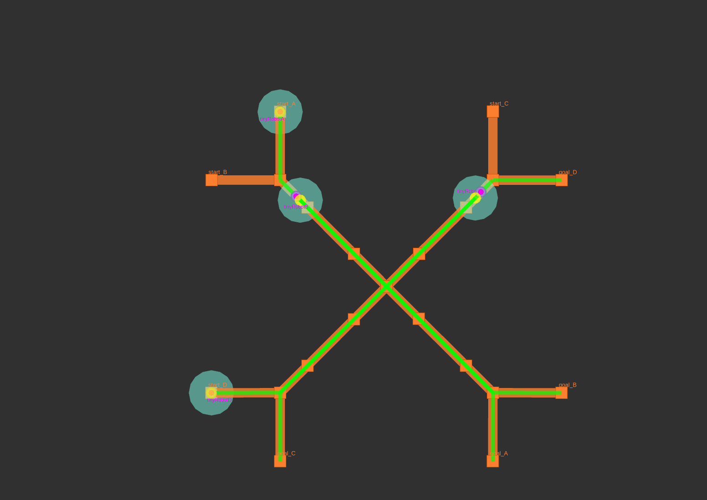
Summary of Test Results
The test was left to run overnight and throughout the project some stability issues leading to robot deadlocks were identified. In-depth debugging and updates to the scheduler were pushed as part of this deployment that increased the reliability until overnight stress tests were successful. The changes introduced can be seen in the rmf_internal_msgs, rmf_ros2, rmf_traffic and rmf_demos pull requests. Specifically, the RMF scheduler makes extensive use of parallel and asynchronous behavior to operate as fast and efficiently as possible. Several edge cases of the scheduler behaving incorrectly were fixed, for example when fleets submitted bad estimates for their tasks, or fleet adapter responses were sent in the wrong order to the scheduler.
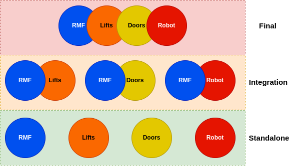
Different levels of tests.
To ensure a stable system integrating multi-party components, different levels of testing were required. As shown in the diagram above, three levels of tests were carried out.
Subsequent sub-chapters will go more in depth on the tests carried out for this project. This section will be dedicated to giving an overview of the executed tests.
Standalone tests which were carried out for each major component
involved in this project, namely: RMF, Lifts, Doors and Robot. Each
standalone component test falls under the responsibility of the
individual component vendors. All tests for each component were composed
of different scenarios / cases depending on the project requirement.
For example, for the case of this project, Senserbot tested its robot's capabilities in crossing the gap at the lift. For RMF's case, the tests carried out were majorly intensively done in simulation as described in Chapter 8.
Integration tests involve sub-system integrated testing. For the Tampines Regional Library project and since RMF is the overarching meta system integrating all components, this involves integrated testing between:
- RMF - Lift
- RMF - Doors
- RMF - Robots
The tests mainly revolve around testing all actions and feedback sent and received by RMF with its corresponding subsystem.
Final tests are where all sub-systems are integrated and are tested based on operational scenarios. This also serves as the User Acceptance Tests for this project.
Standalone Test - Static Lift Rig Tests (Senserbot)
Standalone test - Lifts and Doors
Apart from the multi-level design reviews carried out for the developed components for lift and door integration, a list of tests have also been carried out on the standalone level to ensure quality.
Standalone tests for lift integration
To respect the confidentiality of the lift vendor who provided its services and helping hands in this project, the details of the conducted tests will not be disclosed in this section. However, this section will still give a description of the tested items / cases to provide a better understanding of what needs to be tested to ensure quality and stability.
For RMF to control the lift, the lift vendor has retrofitted its service lift with electronics which exposes its functionality to external systems via dry contact interfaces. A beckhoff PLC coupled with additional electronics (Lift Controller Box) which holds the logic in firing the correct sequence of signals to the lift vendor's electronics serves as a safe and stable intermediate controller. Higher level software calls can then be routed to the PLC to control the lift. A more detailed description of the work in integrating the lift can be found in Chapter 10.2.2.
Table 1 below shows a high level description of the tests carried out for the components for lift integration.
Table 1: Tests for components for lift integration
| Components | Categories | Test Cases | Reasons |
| Retrofitted Electronics from lift vendor | Validation Test | Testing validity of “lift in operation” feedback signal. Reservation of lift. Release of lift. Calling lift to go to a level. | This test is critical as it serves the following purposes: 1. Ensure installation and enhancement works from the lift vendor are done correctly. 2. Ensure the handovered system works as intended to pre-given specification documents. The design of the developed lift controller box references these specification documents. A test early on will show any discrepancy in provided information which may affect the final developed design. |
| Lift Controller Box | Functionality Test | Testing reading of “lift in operation” feedback signal. Reservation of lift. Release of lift. Calling lift to go to a level. Exceptional Behaviors: - Turnkey to non-interfering mode - Electrical release of signals in error / exception mode - Reconnecting when loss of 2 way heartbeat - And more Quality checks - Thermal ventilation - Crimping and connection quality - Mounting reliabilities | To ensure the developed system is assembled and fabricated as designed.To ensure fabricated electronics are stable, safe and durable for 24/7 operations. |
| Software Test | Static Analysis Tests | Ensure production quality code. Expose vulnerabilities in “distance” & “hard-to-reach” code. |
Standalone tests for door integration
Similar to the standalone tests done for lift integrations, the developed door controllers also follow similar test cases to ensure its reliability.
A more in-depth explanation on the work behind door integrations can be found in Chapter 10.2.2.
Table 2: Tests for components for door integration
| Components | Categories | Test Cases | Reasons |
| Door Controller Box | Functionality Test | Testing reading of door states Testing of commanding doors to close and open. Exceptional Behaviors - Switch to non-interfering mode - Connection loss behaviors - And more Quality checks | To ensure the developed system is assembled and fabricated as designed. To ensure fabricated electronics are stable, safe and durable for 24/7 operations. |
| Software Test | Static Analysis Tests | Ensure production quality code. Expose vulnerabilities in “distance” & “hard-to-reach” code. |
Integration Tests
RMF-Lift and RMF-Doors
On the second level, integration tests between the Lift as well as Doors and RMF were carried out to ensure integration quality and correctness as well as expose any shortcomings or bugs in terms of behavioral mismatches between the two systems.
A more in depth explanation of the architecture between RMF and the infrastructure systems can be found in Chapter 10.2.2.
Table 3: Tests for integration of RMF-Lifts and RMF-Doors
| Sub-Systems | Categories | Test Cases | Reasons |
| RMF-Lift | Functionality Test | Changing of modes: AGV mode, Human mode. Calling of lift to level 2,3,4,5,6. Reading and publishing of lift states for all modes and all floors. Exceptional behaviors - Loss of comms - Fire Alarm mode - Timeouts - Non-interfering mode - And more Mechanical quality checks - Lift controller box mounting - Dust protection | To ensure integration is done correctly. To ensure the system is operational even during exceptional situations. To ensure no unintended “hanging” states for all situations. To ensure the system is recoverable after exceptional situations. To ensure the lift controller box is installed in a safe and reliable manner. |
| RMF-Doors | Commanding of doors Reading and publishing door states Exceptional behaviors - Loss of comms - Fire Alarm mode - Timeouts - Non-interfering mode - And more Mechanical quality checks - Door controller box mounting - Sensor mounting reliability - Dust protection | To ensure integration is done correctly. To ensure the system is operational even during exceptional situations. To ensure no unintended “hanging” states for all situations. To ensure the system is recoverable after exceptional situations. To ensure the lift controller box is installed in a safe and reliable manner. | |
| RMF- LiftRMF-Doors | Connectivity Stress Test | Extended period of packet drop monitoringValidating no single point of failure | To ensure the reliability of the connectivity. Due to circumstances, the infrastructure-rmf software adapter for all integrated doors and lifts is a monolithic piece of code multithreaded into different processes. This test also covers the code that never blocks / crashes due to a single point of hardware failure in any of the door or lift controllers. |
Final Test
This is the test where all components including Senserbot, RMF and the integrated lifts and doors are integrated.
For this project, a total of three scenarios (which represent similar operational situations) were tested. The tested scenarios are the following:
-
Robot moving through lift and door to workcell to perform its mission
a. To demonstrate the ability of robots to take lift to different floors, open and move through doors and start its task.
b. Consists of 20 permutations of robots taking lift from Floor A to Floor B and opening the doors for both Floor A and Floor B.
-
Wireless Charging of Robot
a. To demonstrate the robot can be commanded by RMF to go and get charged at level 6 wireless charging point from any floor.
b. Consists of 5 permutations of the robot taking lift from Floor X to Floor 6's charging point.
-
Robot's movement during Emergency
a. To demonstrate that during an emergency situation such as a building fire alarm being triggered, the robots can automatically move out of the main paths of evacuation to prevent blockage. It also covers recovery behaviors of the robot when the emergency situation is disengaged.
b. Consists of 5 permutations of the robot traveling when a fire alarm is triggered.
The test plans for the above scenarios can be downloaded here.
Baseline 0
Static test rig
Design Documents
An excellent resource to have an overview of RMF and the integration process is the ROS2 multirobot book, it's recommended to read it before embarking in any integration effort.
RMF-BMS Integrator
Integration between RMF and infrastructure (doors, lifts and in some cases workcells) is done through adapters.
The purpose of infrastructure adapters is to act as a translation layer between proprietary APIs (i.e. PLCs, cloud based) and RMF. Open source implementation are available in the awesome_adapters repo, at the time of writing for Kone lifts and Dormakaba doors.
Templates are also provided for both doors and https://github.com/open-rmf/lift_adapter_template. In templates, integrators only need to fill a few functions that are specific to the API of the chosen device, for example for doors, a function to open, one to close and one to query the state of the door.
Once a door / lift adapter is added to the system RMF, and through it any fleet that is integrated in the future, will be able to use it for operations.
RMF-Core (Cloud) Integrator
A template is provided to integrators to help with cloud deployment, it is rapidly growing so it is recommended to check the repository itself for the latest integration instructions.
At the date of writing, it uses github actions to build docker images which are hosted in a cloud registry and ran in a cloud kubernetes (k3s) cluster configured through helm charts. The template itself only builds the core RMF services but provides examples on how to add custom pods (i.e. to run fleet adapters or infrastructure adapters).
RMF-AMR Fleet Integrator
Integration between RMF and robot fleets is done through fleet adapters.
Similar to infrastructure adapters, several open source implementations for a variety of robot vendors / models are available in the awesome_adapters repo. We also provide both a fleet adapter template and a demo fleet adapter that works with Gazebo simulations, depending on preference either can be used to integrate with a new robot vendor.
Several types of integration are possible depending on the level of control given by the robot vendor, for details on the process consult the relevant multirobot book chapter
Overall Systems Integrator
An overview of the overall system integration effort is available in the Integration chapter in the multirobot book. As an overview of the steps that are part of a usual deployment:
- Obtain building blueprints / maps, then design a traffic map through traffic editor.
- Integrate and configure the desired mobile robot fleets through fleet adapters.
- Integrate as needed doors, lifts or workcells through infrastructure adapters.
- Test on a local machine for simplicity to make sure all the parts work as needed.
- Create a copy of the https://github.com/open-rmf/rmf_deployment_template/ and setup the image building / cloud cluster pipeline.
- Test and iterate, updating cloud images when needed, until performance is satisfactory.
AMR to Building Interactions
AMR Integration
Fleet Adapter
Architecture
Robot Modifications
Lift and Doors Integration
Overall System Overview
The objective of lift and doors integration with RMF (Robotics Middleware Framework) is to facilitate infrastructure interoperability with the deployed robots in the building.
A physical server, a lift controller box for the service lift and 5 door controllers for doors on levels 2 through 6 are installed on site to achieve the aforementioned objective. Refer to figure 1 to get an overview of the overall architecture.
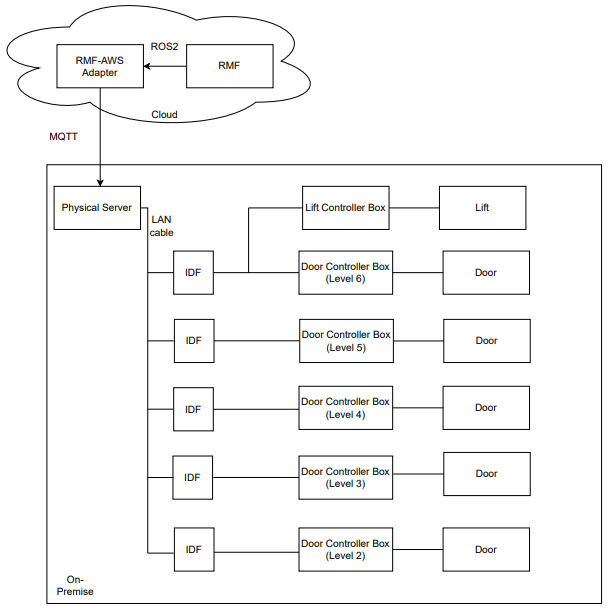
Figure 1: Physical system architecture.
The server is located at the library's network/server room and it communicates to RMF via AWSCore/MQTT. A PLC is housed in a lift controller box at level 6 cargo lift lobby, which is shown in figure 2. It is connected to the server via LAN/Ethernet.
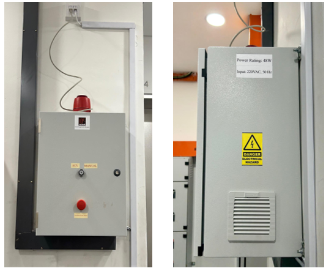
Figure 2: Lift Controller Box installed on-site (front and side views)
A controller box was installed for each door to control its movement, as shown in figure 3. The controller box interfaces with the door's internal circuit (pre-installed automated door controller) and motion sensor as well as its security card access system. An IO acquisition module is housed in each controller box which is connected to the server via LAN/Ethernet cable.
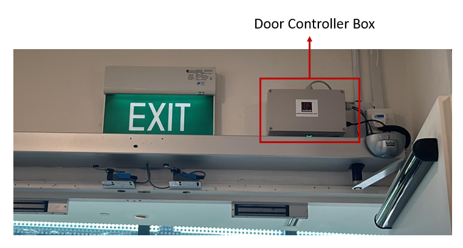
Figure 3: Door Controller Box installed on-site
With regards to the particular communication protocol between each hardware component, RMF communicates to the infrastructure via a ROS2-AWSCore/MQTT bridge. RMF sends a LiftRequest.msg to AWSCore to command the lift while it receives LiftState.msg as lift's status update at a frequency of 1 Hz. Similarly for doors, with DoorRequest.msg and DoorState.msg.
Server parses a LiftRequest message and sends relevant commands to a PLC (Programmable Logic Controller) via ADS communication protocol which is then forwarded to the lift by manipulating corresponding signals via dry contact. Beckhoff CX9020 was the PLC model used for this project. It is connected to four digital input terminals and six digital output terminals.
Similarly, the server parses a DoorRequest message and sends relevant commands to the IO module via RESTful API, which then directly interacts with the pre-installed automated door controller via installed electronics. Adam 6052 was the IO acquisition module used for this project.
The following sections explore each component in detail.
Integration with Lift
AGV Mode
To facilitate the project's operations, the lift vendor upgraded the installed lift to accommodate a new mode of operation called AGV mode. Under this mode of operation, it allowed external hardware to interface with its internal circuit and control the lift movements.
All new hall calls (buttons pressed from lobby to call lift to that particular floor) and car calls (floor number buttons pressed from within lift) are ignored in this mode. Before transitioning into AGV mode from human/manual mode, all the existing car calls are completed to ensure passengers already onboard the lift are allowed to get off at their intended destination floor whereas hall calls are cancelled. This mode is displayed in the elevator user interface panel as shown in figure 4 and the same is announced from the speaker as well.
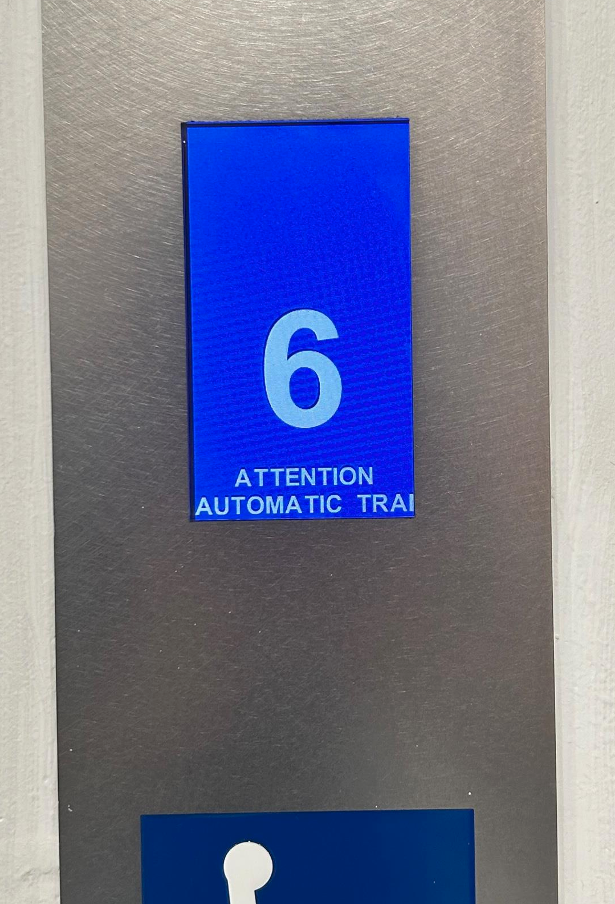
Figure 4: The following message: "ATTENTION AUTOMATIC TRANSPORT OPERATION" is shown on all car and hall lift displays.
Flow of operations
The standard flow of operations is as follows (with respect to lift controller):
- Particular input signals are activated if the lift is in normal, working condition to transition into AGV mode.
- After lift finishes existing car calls, it switches to AGV mode. Lift then moves to the destination floor as requested.
- After a successful transit, it stays at the same floor with its doors kept open until a new command is received.
- It exits AGV mode to get to human/manual mode after the robot has finished its transit.
At a particular floor, a specific signal ensures that lift doors are open to facilitate robot movement into the lift car. After receiving a signal to move to another floor, the lift doors are automatically closed.
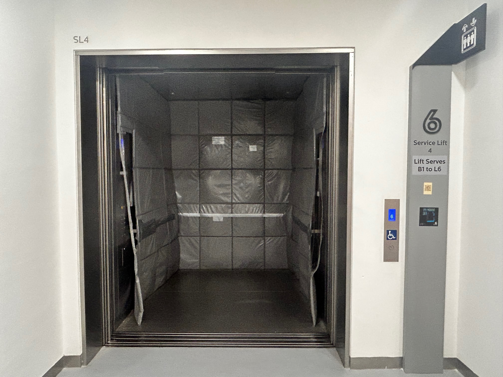
Figure 5: Lift in AGV mode at floor 6 with its doors kept open.
The lift is connected directly to the building's fire alarm signal and alerts PLC consequently. Lift immediately exits AGV mode (PLC goes into error state) and proceeds to the first floor and keeps its doors open. The alarm beacon on top of lift controller box (refer to figure 6) is enabled which lights up as a red light to alert the nearby patrons and library staff of the emergency situation.
If the PLC is in error state, all requests are ignored until the recovery behaviour has been implemented. At the end of this section, all the possible exception scenarios are listed in more detail.
Please note that as per project requirements, floor B1 is currently excluded from the operational flow and lift controller box cannot command the lift to reach it. This can be easily modified later if needed by making corresponding changes in the lift controller box hardware and software.
Lift Controller Box
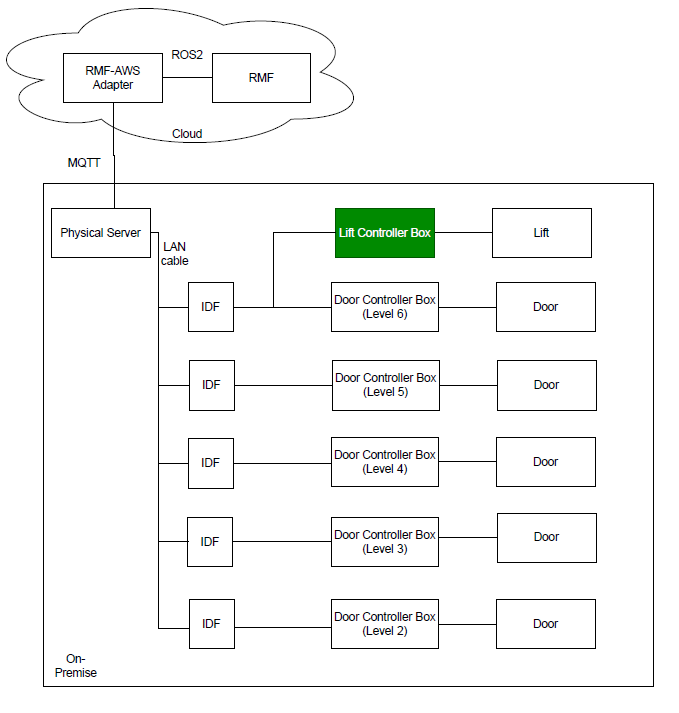
Figure 6: Lift Controller Box with respect to the physical system architecture.
Lift controller box is installed at the sixth floor in the service lift 4 lobby of the library. It looks as shown in figure 6, with different external components labelled in the image. A conceptual diagram with the box's contents and its connections to external peripherals and devices is shown in figure 7.
A turnkey slot is provided to facilitate the library staff to disable or enable the AGV mode option. If it is toggled towards the Manual mode option, lift will remain in manual mode and all RMF requests to switch to AGV mode will be ignored.
A Simulated Fire Alarm button is included to mimic an actual fire alarm. Its main purpose is to help in the testing of fire alarm exception case and serves no purpose after deployment. In both simulated and actual fire, the alarm sound beacon sounds and lights up to alert the nearby patrons and staff of the emergency.
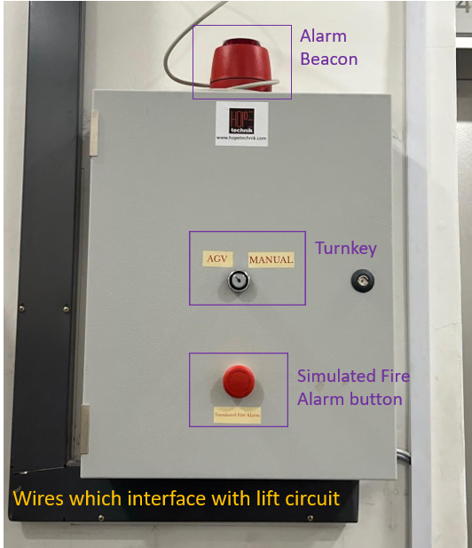
Figure 7: Labelled lift controller box.
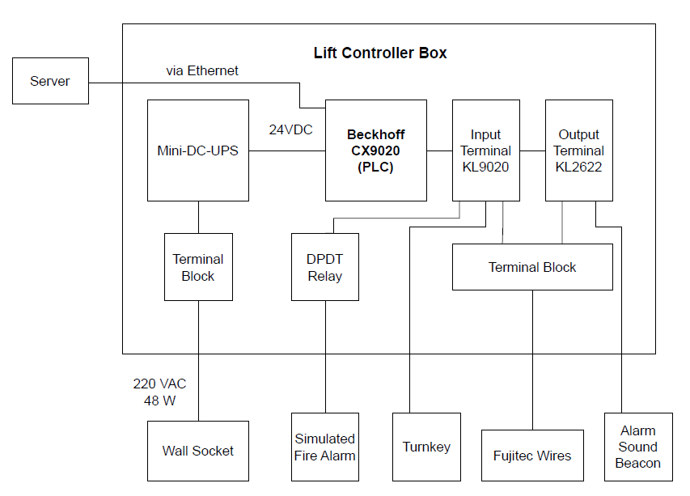
Figure 8: Conceptual connections diagram of the lift controller box.
Integration with Doors
Flow of Operations
The standard flow of operations is quite straightforward (with respect to the door controller):
- If the door controller is not offline, either open/close command is received and the door is respectively actuated.
- In open command, the door is kept open until explicitly commanded otherwise.
- If the door controller is offline, all requests are ignored until it is back online.
Door Controller Box
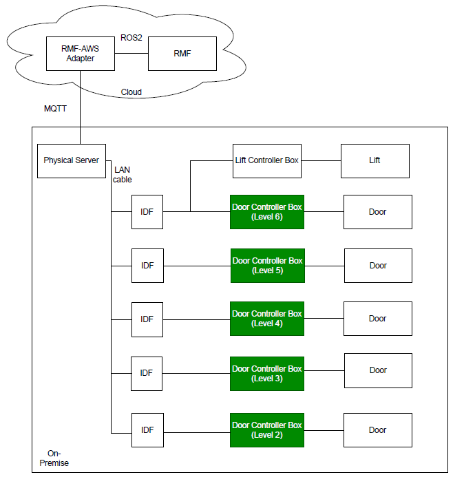
Figure 9: Door Controller Boxes with respect to the physical system architecture.
Each door has its own door controller box, so there are 5 such boxes installed on levels 2 through 6. It looks as shown in figure 10, with different external components labelled in the image. A conceptual diagram with the box's contents and its connections to external peripherals and devices is shown in figure 11.
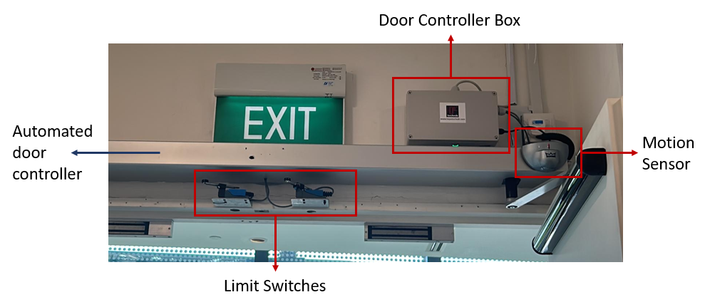
Figure 10: Labelled door controller box.
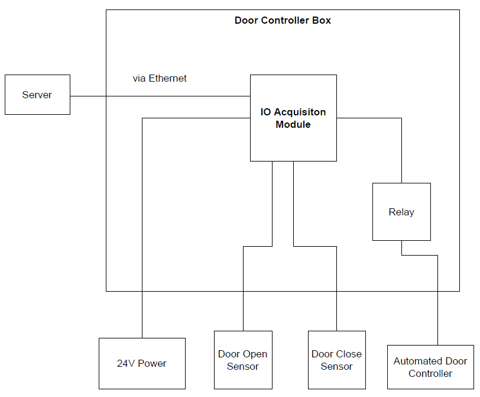
Figure 11: Conceptual connections diagram of the door controller box.
The limit switches are used as feedback to confirm if the door has 'fully closed'. The pre-installed automated door controller's internal circuit is utilised to confirm if the door has 'fully opened'.
Server
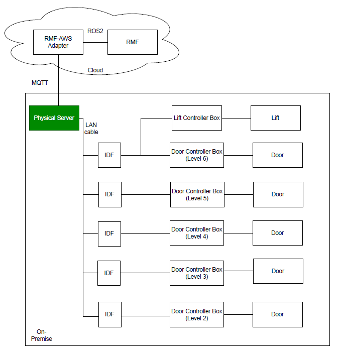
Figure 12: Server with respect to the physical system architecture.
The application is deployed via a Docker container. It utilises AWS IOT Core cloud service to connect to the RMF lift adapter.
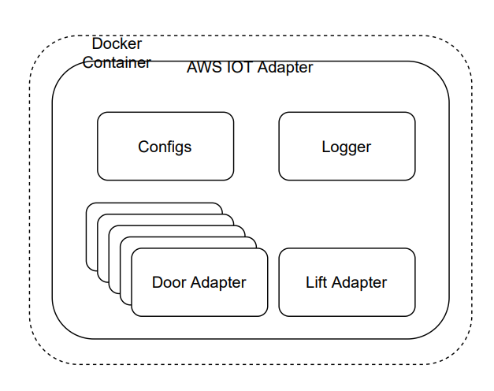
Figure 13: Software Architecture of server application.
A LiftState message is published to the AWS topic every 2 seconds which is read by RMF to get all relevant information about the lift state at that instance. The contents of the message is shown in figure 14.
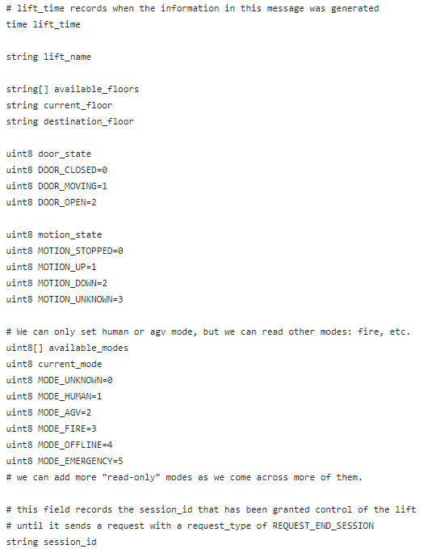
Figure 14: ListState.msg contents.
The data to be published is retrieved via the PLC using ADS (Automation Device Specification) communication protocol, which is Beckhoff's preferred method.
RMF commands the lift by publishing a LiftRequest msg every 1 second on a unique AWS topic which the server subscribes to. The contents of the message is shown in figure 15.
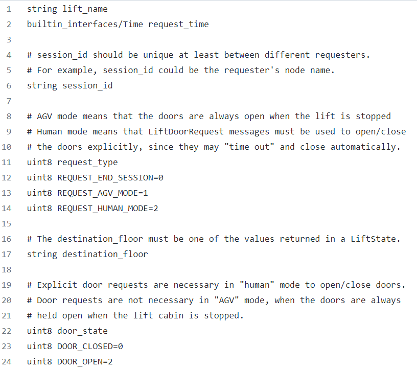
Figure 15: LiftRequest.msg contents.
A DoorState msg for each door is published to the respective AWS topic every 2 seconds which is read by RMF to get all relevant information about the door state at that instance. The contents of the message is shown in figure 16.
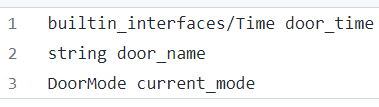
Figure 16: DoorState.msg contents.
RMF commands each door by publishing a DoorRequest msg every 1 second on an AWS topic which the server subscribes to. This topic is the same for all doors. The contents of the message is shown in figure 17.
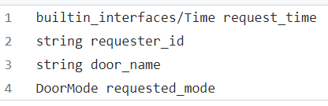
Figure 17: DoorRequest.msg contents.
Exception Scenarios
The following subsections explore all possible exception cases for lift and doors and their respective recovery behaviours. The application is built in a non-blocking way, for example, if one door has error or is offline, other doors and lift are unaffected and vice-versa.
Lift Exceptions and Recovery Behaviour
Table 1 summarises the exception scenarios possible with regards to the lift and its controller box. It also specifies the corresponding recovery behaviour to handle the occurred exception.
Table 1: Exception Scenarios for service lift
| Sr. No. | Error/Exception | Action | Recovery behaviour |
| 1 | Loss of communications between server and PLC. | 1. Lift goes back to manual mode. 2. PLC state goes to error state. | When the heartbeat is heard again, it goes back to human mode. No need for human intervention. |
| 2 | Fire Alarm is activated. | 1. Lift goes back to manual mode. 2. PLC state goes to error state. 3. Sound beacon is switched on. | Manual intervention is needed. PLC will stay in error state until it is restarted. |
| 3 | Lift is not in operational state. | 1. Lift goes back to manual mode. 2. PLC state goes to error state. | No need for human intervention. Operations will continue as they were after lift is back in operational state. |
| 4 | Simulated Fire Alarm button is pressed. | 1. Lift goes back to manual mode. 2. PLC state goes to error state. 3. Alarm beacon is switched on. | Manual intervention is needed. PLC will stay in error state until it is restarted. |
| 5 | If turnkey is toggled towards Manual | 1. Lift goes back to manual mode. 2. PLC state goes to error state | To return things to normal, toggle turnkey towards AGV mode. |
| 6 | Mode Timeout (10 minutes) (Lift is unable to go to AGV mode from human mode) | 1. Lift goes back to manual mode. 2. PLC state goes to error state. | Manual intervention is needed. PLC will stay in error state until it is restarted. |
| 7 | Destination floor requested is not in available floors | 1. Lift goes back to manual mode. | Operations flow is not hampered. RMF to send a correct destination floor in the next request. |
| 8 | Lift movement timeout - Lift did not reach destination floor after 2 minutes | 1. Lift goes back to manual mode. 2 . PLC state goes to error state. | Manual intervention is needed. PLC will stay in error state until it is restarted. |
If PLC goes into error state, it is indicated by the last LED on its output terminal, as shown in figure 18:

Figure 18: Error state indication by LED on PLC, encircled by red ellipse.
Door Exceptions and Recovery Behaviour
Table 2 summarises the exception scenarios possible with regards to the lift and its controller box. It also specifies the corresponding recovery behaviour to handle the occurred exception.
Table 2: Exception Scenarios for doors
| Sr. No. | Error/Exception | Action | Recovery behaviour |
| 1 | Loss of communications between server and door controller. | 1. Door mode is reflected as ‘offline’. | Need for human intervention if it stays disconnected for a long time. After reconnection, the operation continues as before. |
| 2 | Cannot detect fully open or fully closed door state. | - | Need for manual intervention to fix the relevant sensor. |
RMF Traffic Editor
- How we used Traffic Editor
- Introduction & Installation
- Using Traffic Editor GUI
- Step 1: Naming your building
- Step 2: Adding Floorplans
- Step 3: Adding Robot Generated Map
- Step 4: Map Alignment
- Step 5: Adding Walls & Flooring
- Step 6: Adding Interior Walls & Doors
- Step 7: Adding Measurements
- Step 8: Adding Robot Lanes
- Step 9: Robots for Simulation
- Step 10: Level Alignment
- Step 11: Add Lift
- Tips, Errors and Mistakes
How we used it!
FYI: Traffic Editor is well documented with instructions on installation and usage. The documentation below highlights how we used Traffic Editor during this project. Think of this page as the user's perspective 😊.
Introduction & Installation
RMF Traffic Editor is a repository containing a set of ROS2 packages that enable you to use a GUI to annotate floorplans to create traffic patterns (rmf_traffic_editor package) and convert this to a simulation world (rmf_building_map_tools package).
Installation with RMF
If you have already installed RMF based on the installation instructions, you'll find that it is already included in the rmf.repos file and so it should already be in your rmf_ws folder.
Independent Installation
The beauty of Traffic Editor is that the generated .world files are able to be used in simulation even without RMF. So perhaps you would like to just test out how Traffic Editor is like - you can are able to do a separate installation by cloning the repository, installing the dependencies and building the packages.
# making your workspace
mkdir -p ~/rmf_traffic_editor_ws/src
cd ~/rmf_traffic_editor_ws/src
# cloning the repo
git clone https://github.com/open-rmf/rmf_traffic_editor.git
# rmf_traffic_editors depends on rmf_utils for building
git clone https://github.com/open-rmf/rmf_utils.git
# rmf_traffic_editor dependencies
sudo apt install python3-shapely python3-yaml python3-requests
source /opt/ros/galactic/setup.bash
cd ~/rmf_traffic_editor_ws
colcon build
Using Traffic Editor GUI
Now that you have the relevant repositories installed, source your workspace and let's get started!
# for full RMF installations
source ~/rmf_ws/install/setup.bash
traffic-editor
or
# for full independent installations
source ~/rmf_traffic_editor_ws/install/setup.bash
traffic-editor
Step 1: Naming your Building
To start, you'll first name your building.yaml file. In the video, I saved it under the src folder in my workspace, but you can save it wherever you want.
Traffic Editor supports Geographic Coordinates and Reference-Map Coordinates. This feature was created after our creation of TRL, hence we were using the older Reference-Map Coordinate System in the video. Moving forward, it is encouraged to use the Geographic Coordinate system to avoid conflict for multiple levels.
Step 2: Adding Floorplans
In this step, we start building our level by adding a png file of our floorplan. To follow this example, you may use the same files used in the video found in this repository. For now, we're adding the floorplan of Level 2 of Tampines Regional Library (that's the lowest floor!).
Step 3: Adding Robot Generated Map
Now even though we have a floorplan of the building, we may still be missing some real-life features that do not show up on the floorplan. Hence, we will be adding an additional layer - the Robot Generated Map. This will help reveal extra obstacles such as bookshelves and false walls.
This robot map was generated by CAATO2's 2D LIDARs which produced a pgm and yaml file. The pgm file was converted to png to import into RMF Traffic Editor.
Step 4: Map Alignment
Now that we have 2 maps, we need to align them. The robot_map (in red) as shown in the video, is terribly oversized and needs to be scaled down. We first attempt to manually align the 2 maps such that we're able to roughly identify key features of both maps.
Once done, we're able to "add features" on each of the layers. The idea behind this is that by identifying similar features on both layers, we'll be able to use these points to align the 2 layers automatically.
❗️Make sure you select the layer before placing the feature. Notice how I place all the features on the robot_map layer before switching to the Floorplan layer and place the features for the Floorplan layer! You should have at least 3 pairs of features.
Once you're done, you may then draw "rubberbands" to link up the similar features. Once you're done, you can "Optimise Layer Transforms" and you'll see the magic happen!
(p.s. thanks so much for making & explaining this feature Morgan 😁 !)
Step 5: Adding Walls & Flooring
Let's start making our world! Use the blue line tool and trace the parts of the floorplan with walls. Once you're done, you can right-click to end your line.
ℹ️ You are able to adjust the height of the walls under "Properties" on the bottom right when you select them
After that, you may use the flooring tool by tracing the same vertexes you used to create the walls!
Step 6: Adding Interior Walls & Doors
Buildings aren't just made of exterior walls! Don't forget to add in walls within the building.
When adding doors, don't forget to rename the door name for future reference.
ℹ️ Use a naming convention to be tidy. At TRL, we named our doors
<description><number>_<floor>_door
At TRL, there are mainly 2 types of doors: double_hinged and double_sliding. Play around with the other properties to get it to the orientation you need.
You can refer to the Official Traffic Editor Documentation for more info the types of doors available.
Step 7: Adding Measurements
So far during our creation of this world, we have yet to define the measurements for the floorplan. Hence, we can use the measurement tool to add to our file. Be sure to add multiple measurements to get an accurate scaling.
Admittedly, this step should be done earlier but it's ok if it's done at this stage as well.
Step 8: Adding Robot Lanes
This step is very important! You are now determining where the robot is able to traverse on. The video simply demonstrates how to add lanes and name certain waypoints.
ℹ️ Load up
trl.building.yamlto see how we did our robot lanes!
Step 9: Robots for Simulation
For this project, we tested much of RMF in simulation. Thus, this is technically an optional step for real-life robots.
In order to spawn a robot in simulation, we need to define the properties as shown in the video. You may find a better explanation on the official documentation but for our use-case, we followed closely to the examples in the rmf_demos repository.
❗️Make sure you take note of your spelling and capitalization in the
spawn_robot_nameandspawn_robot_typeproperties! They are quite specific so they are possible points of error.
Step 10: Level Alignment
Before long, you'll find yourself having multiple floors of different floorplans. The question then is, how do you align these different floors?
In the video, we use the Level Alignment Fiducial tool.
ℹ️ Use features that are 100% aligned on every floor such as lift cabins and escalators!
Similar to the other alignment tools, be sure to use more than 2 points to ensure accuracy.
Step 11: Add Lift
Lastly, it's time for us to add the lifts.
After filling the details as shown in the video, align the lift cabin to the proper position on the map.
❗️Make sure the lift cabin does not touch the walls of the building
❗️Be sure to add lift waypoints to enable the robot lanes to join between levels
Tips, Errors and Mistakes
❗️Always always always SAVE your work! (ctrl-s)
If Traffic Editor crashes, or if you close the terminal running traffic-editor without saving, your hard work will be lost! 😭
❗️Read the building.yaml file!
Also, note that Traffic Editor is after all simply a GUI. All your changes are actually added to the building.yaml file. Take a look at it and try to understand it's structure. At times, this will allow you to make more precise changes faster instead of relying heavily on the GUI!

Mapping & Traffic Editor Concerns
Traffic Editor is not perfect and can be buggy at times. The key is not to rely on the GUI but to understand the building.yaml file deeply and reading up the official documentation.
Interoperability considerations (across multiple fleets)
It is vital to create the world with precision. The system integrator but recognize that not just a single type of robot will be relying on this RMF traffic plan. Robots come in different shapes and sizes and may navigate very differently, hence all these must be taken into consideration when creating the traffic plan.
e.g. the robot lanes must be decided with all stakeholders to make sure that the robot will not perform unexpected behaviors such as entering restricted areas
Emergency Requirements & Behaviors
Safety Instrumented System (SIS)
Wireless Charger
Recommended integration to AMR
Mechanical placement considerations (Eddy currents, ~31cm from ground)
Electrical & Electronic
Software
Functional Check
Docking approaches (fiducial markers, lidar, reflective markers)
Ethernet wiring diagram at TRL

Wiring Requiurements
- Lvl B1 – x1 Eth Port (no auto doors, 1 for spare)
- Lvl 2-5 – x2 Eth Port each (1 for door, 1 for spare)
- Lvl 6 – x4 Eth Port (1 for door, 1 for spare)
- (Lift PLC to have x2 lan cables for redundancy)
Wireless charger to deploy at level 4 and 6
Level 6

Level 4

Trunking switch to Server room

Server room

Download link
Click the link to download the Ethernet Wiring Diagram. Download
Parasoft Setup (of RMF)
In this section, we will go through an example of configuring the rmf_utils package to be suitable for running Parasoft tests on it.
Setting Up Parasoft
As our current license is only supported on one local machine, the Machine ID has to be fixed to a non-floating one each time a new Parasoft session is being started. Fix the machine ID with the following command:
export PARASOFT_SUPPORT_NET_INTERFACES=enp5s0
Now that the Machine ID is a non-floating one, we can now run the Parasoft software with:
<PARASOFT_INSTALL_DIR>/cpptest
Configuring rmf_utils Project
To import existing projects on Parasoft to run testings, we need to perform the following actions:
- Add the Parasoft cmake folder into rmf_utils project structure
- Add configuration lines into the main CMakeList.txt
- Build the rmf_utils project
Add Parasoft Cmake Folder
From /$PARASOFT_INSTALL_DIR/integration/cmake directory, copy the entire Parasoft cmake folder into rmf_utils project structure.

This cmake folder consists of "cpptest.templates", "cpptest-coverage.cmake" and "cpptestproject.cmake".

The entire Parasoft cmake folder is now added into rmf_utils project structure.

Add Configuration Lines into Main CMakeList.txt:
To enable the cmake folder with Parasoft C/C++test related extension functions, we need to add the following line:
include(cmake/cpptest-project.cmake)
We will need to define a target to represent the C/C++test project for rmf_utils, by adding
cpptest_add_executable() function and other required build options and dependencies:
cpptest_add_executable(
rmf_utils_testing # name of C/C++test project name (to be modified)
CPPTEST_COMPILER_ID gcc_9-64 # compiler name
TARGETS mf_utils # target name (to be modified)
)
# link C/C++test project name to target name
target_link_libraries(rmf_utils_testing PRIVATE rmf_utils)
Build rmf_utils Project:
Now that the target is defined with build options and dependencies, we can now configure and build to generate C/C++test project configuration files for rmf_utils. This allows us to import rmf_utils as an Eclipse project in Parasoft. This is done by the following commands:
cd <RMF_UTILS_DIRECTORY>
mkdir build
cd build
cmake -DCPPTEST_PROJECT=ON ..
make
Importing rmf_utils Projects
After configuring the project, we can now proceed to import it into Parasoft. On the Parasoft window, navigate to the following tab:
File > Import > General > Existing Projects into Workspace
Select "root directory" to be the main folder, and browse for the rmf_utils project. Under Options subcategory, select "search for nested projects" checkbox. A list of C/C++test project names would be listed according to the rmf_utils project. Select the corresponding C/C++test project name, rmf_utils_testing in this tutorial, configured in the cpptest_add_executable() previously. Lastly, click Finish to import rmf_utils project.

Running the Parasoft Test
Now that we have imported rmf_utils successfully into Parasoft, we can now run tests according to our preferred rules and standards. Select the imported project, rmf_utils_testing, on the left panel. Click on the blue Run Tests button to test the project using the default "Recommended Rules" standard.

We can choose other standards to run the test, by clicking on the arrow beside the blue Run Tests button. Customization can be done as well by navigating to the following tab:
Parasoft > Test Configurations
Select the desired rule category > Static. Select or deselect rules to customize. Click Apply to save changes.

The sample html parasoft report pf the rmf_utils package can be accessed in the Parasoft Outputs section of this handbook
Parasoft Outputs (of RMF Modules)
The modules reports here are culled from the rmf_core repositories. Current outputs are the static test reports from our commercial QA tool of choice (Parasoft). Unit testing and code coverage reports to follow in the coming months
See Approach to Software Quality Assurance
As a guideline, modules that are intended for in operational runtime, should be written in
- C/C++ and
- Subject to the static, unit and code coverage tests, for hygeine purposes
Mandatory Screened (1st July 2022)
RMF Task
rmf_task_testing_detailedRreport.html
rmf_task_testing_summaryRreport.html
RMF Task ROS2
rmf_task_ros2_testing_detailedReport.html
rmf_task_ros2_testing_summaryReport.html
RMF Traffic
rmf_traffic_testing_detailedRreport.html
rmf_traffic_testing_summaryRreport.html
RMF Utils
rmf_utils_testing_detailedRreport.html
rmf_utils_testing_summaryRreport.html
RMF Fleet Adapter
rmf_fleet_adapter_testing_detailedReport.html
rmf_fleet_adapter_testing_summaryReport.html
Optionally Screened Modules (1st July 2022)
RMF Battery
rmf_battery_testing_detailedReport.html
rmf_battery_testing_summaryReport.html
RMF Building Sim Utils
rmf_building_sim_utils_testing_detailedReport.html
rmf_building_sim_utils_testing_summaryReport.html
RMF Robot Sim Utils
rmf_robot_sim_utils_testing_detailedReport.html
rmf_robot_sim_utils_testing_summaryReport.html
RMF Visualization Rviz2 Plugins
rmf_visualization_rviz2_plugins_testing_detailedReport.html
rmf_visualization_rviz2_plugins_testing_summaryReport.html
RMF Visualization Schedule
rmf_visualization_schedule_testing_detailedReport.html
rmf_visualization_schedule_testing_summaryReport.html